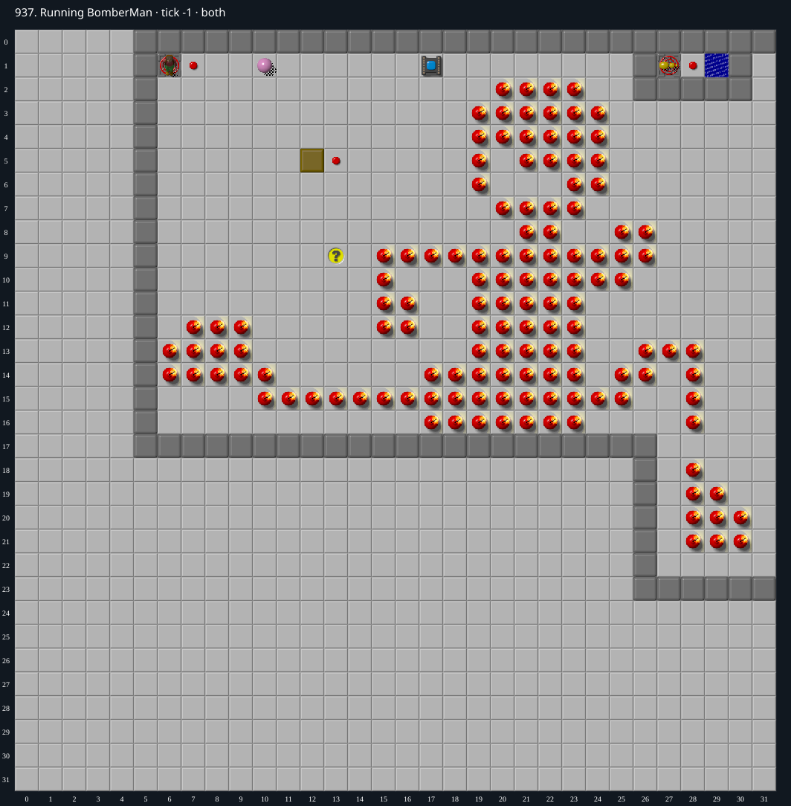

Jacques · Original Tile World MS
937. Running BomberMan
Verified replayA winning MS replay clears all 130 bombs with cloned blocks, collects the buried chips, and exits at tick 18,780. The native and TypeScript traces match exactly.
130 chips required · 999 second time limit
Verified in both engines. Native Tile World and the web MS engine both completed at tick 18,780 (939 seconds), with identical full traces. Verification certificate.
Winning strategy
- The button at (13,5) activates the bug cloner at (27,1). A cloned bug crosses the button at (28,1), which activates the block cloner at (12,5) and emits a southbound block at (12,6).
- MS bug cloner release follows the controller direction set by the ball in row 1. Queue each subsequent clone while delivering the current block so that the next block is ready without a separate wait.
- Push one block into each bomb. The block and bomb disappear, leaving the chip below intact. Keep Chip out of the ball corridor in row 1 during this work.
- Delivery paths collect some exposed chips. After clearing all 130 bombs, collect the remaining chips, then enter the socket over the exit at (17,1).
- The saved TWS completes the unchanged DAT in both engines at tick 18,780, with all 130 chips collected. The complete traces match.
Inspect both layers
The main map shows the initial runtime state. Switch to the buried layer to inspect hidden terrain and items. Hover coordinates are also available in the downloadable SVG.


Recorded checks and attempts
- data audit: Decoded both 1024-cell DAT planes and exact level metadata; initialized production MS runtime and rendered actual game sprites.
- winning replay: {"kind":"winning replay","tws":"937.tws","certificate":"937.tws.json","typescriptFinalTick":18780,"nativeFinalTick":18780,"exactTraceParity":true,"nativeStderr":"","seed":0,"stepping":0}